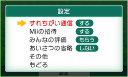
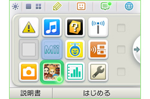
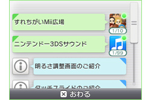
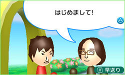
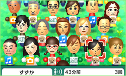

まずは『Miiスタジオ』でMiiを作成し、『すれちがいMii広場』で通信の設定を行いましょう。あとはニンテンドー3DSの電源をONにしたまま、フタを閉じてカバンなどに入れて持ち歩くだけです。街や電車の中など、ニンテンドー3DSを持っている人がとくにたくさんいそうな場所に出かけてみてください。別のページでご紹介している『ニンテンドーゾーン』や『ニンテンドー3DSステーション』が設置されているお店に行ってみるのもいいでしょう。

誰かとすれちがうと、3DS本体の『おしらせランプ』が緑色に光ります。HOMEメニューを見ると、『おしらせリスト』と『すれちがいMii広場』のアイコンにも緑色の印がついているはず。

『おしらせリスト』では、誰かとすれちがったことや、すれちがった人数を確認できるので、『すれちがいMii広場』を起動する前でもすれちがいの状況がわかります。
いちどにすれちがえるMiiは10人なので、こまめに確認しましょう。
いちどにすれちがえるMiiは10人なので、こまめに確認しましょう。

すれちがい通信に成功すると、自分の広場には、すれちがったみんなのMiiが、あいさつをしながらドンドン入ってきます。 みんな実際に外出先ですれちがった人たちばかりだと思うと、不思議な気分です。

バリエーション豊かなたくさんのMiiがあつまった画面を見ていると、それだけで楽しくなってきます。
みんなの面白いあいさつを参考にして、自分のMiiのあいさつもよりアピール度が高いものに……と考えるのも楽しいでしょう。
みんなの面白いあいさつを参考にして、自分のMiiのあいさつもよりアピール度が高いものに……と考えるのも楽しいでしょう。
同じMiiと2回以上すれちがうと、次回以降にそのMiiに対して特別な「こべつあいさつ」を送ることができます。何度もすれちがう人と、Miiを通じて仲良くなれるかも！？